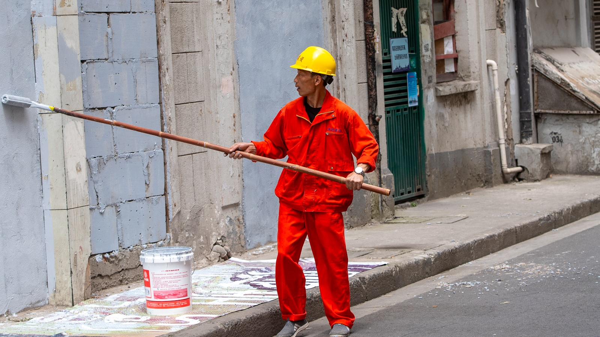
Fassade & Wärmedämmung
Neuer Anstrich, sauberer Putz und Wärmedämmung — damit Ihr Haus geschützt ist und gut dasteht.
Anfragen →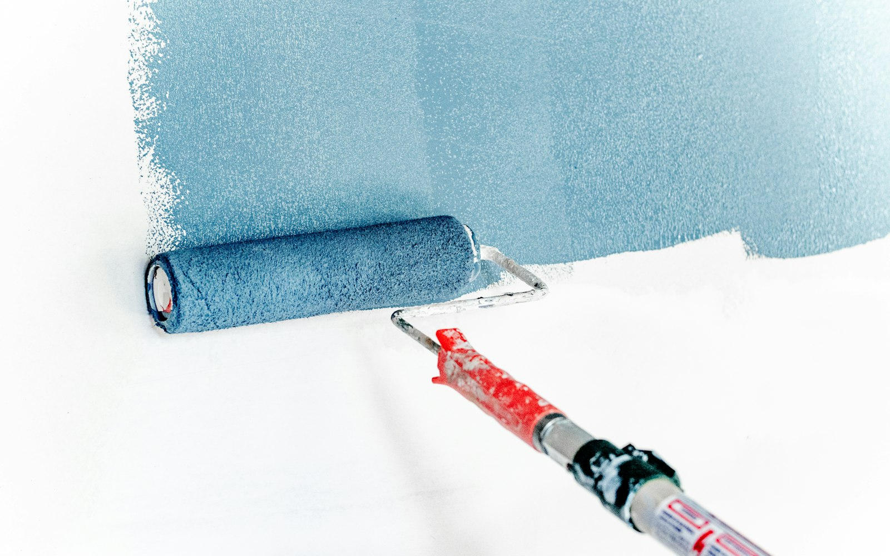
Maler-, Tapezier- und Gipserarbeiten in Mosbach — von der Fassade bis zur Stuckdecke, sauber geplant und sorgfältig ausgeführt.
Manche Leistungen erklärt man nicht — man zeigt sie.
Fassaden, Wärmedämmung, Schmucktechniken, Trockenbau: Vieles versteht man erst, wenn man das Ergebnis sieht. Deshalb steht hier die Arbeit im Mittelpunkt — und eine Anfrage, die Ihnen Wege spart.
Maler-, Tapezier-, Gipser- und Sanierungsarbeiten aus einer Hand — jede Leistung können Sie direkt als Projekt anfragen.

Neuer Anstrich, sauberer Putz und Wärmedämmung — damit Ihr Haus geschützt ist und gut dasteht.
Anfragen →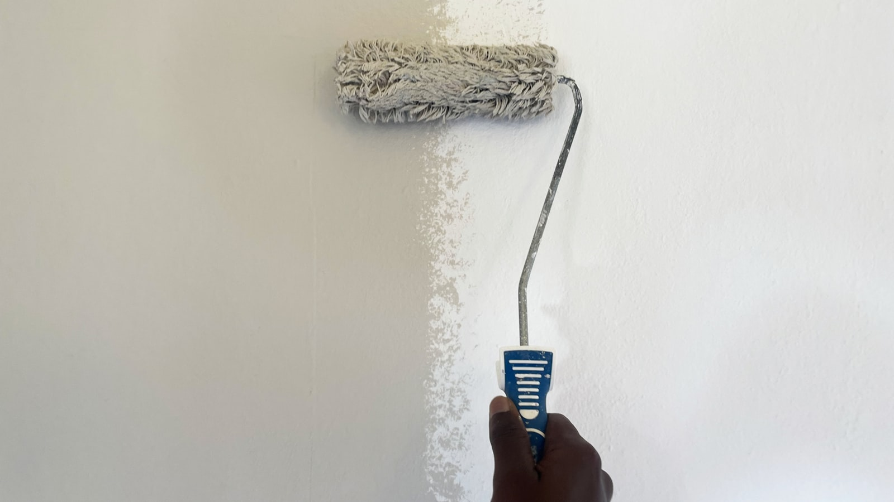
Wände, Decken und Tapeten in ruhiger, sauberer Ausführung — vom einzelnen Zimmer bis zur ganzen Wohnung.
Anfragen →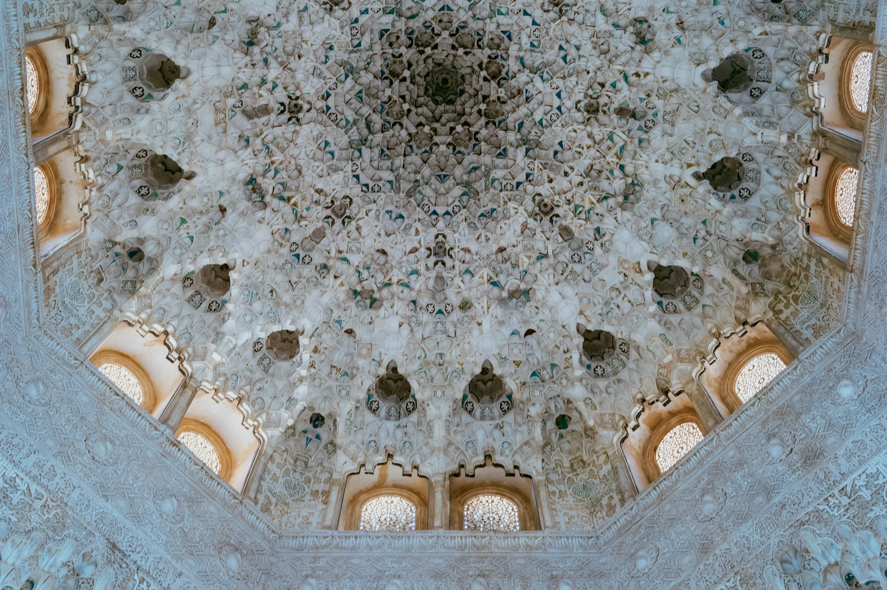
Ornamente, Profile und dekorative Techniken — Handwerk, das Räumen Charakter gibt.
Anfragen →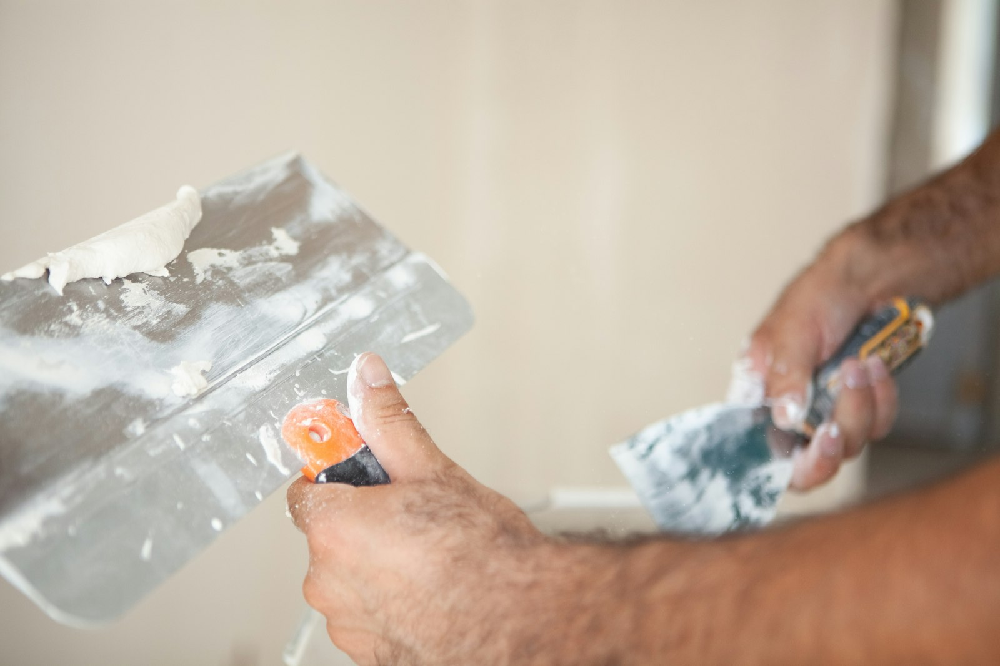
Neue Wände, Deckenabhängungen und saubere Übergänge — präzise umgesetzt.
Anfragen →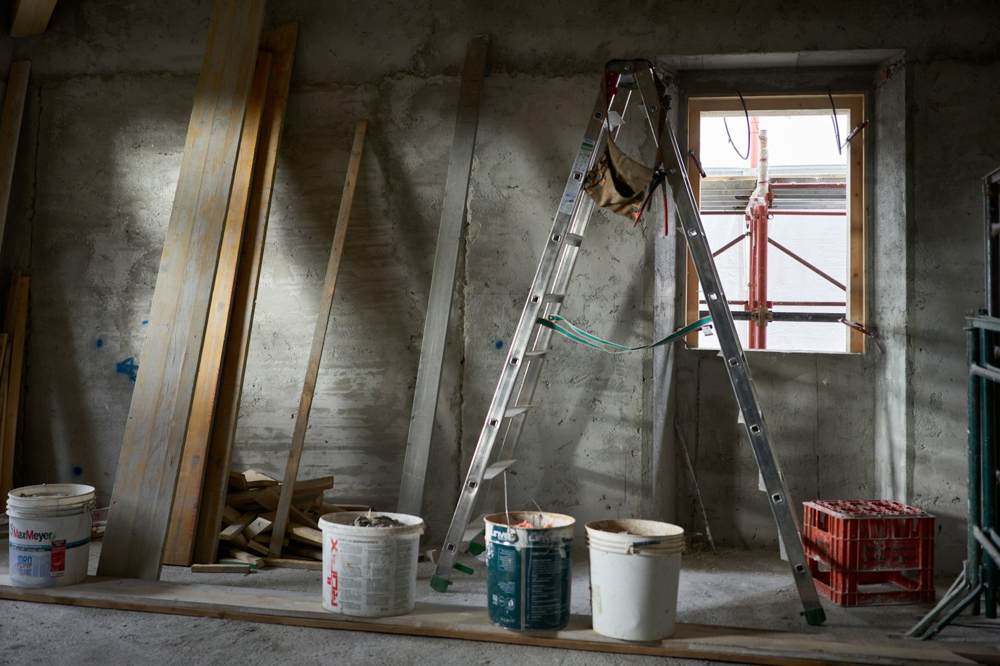
Ein Bild sagt mehr als jede Leistungsliste: Ziehen Sie den Regler über das Motiv und vergleichen Sie selbst.
Beispielfotos (Symbolbilder) — keine Arbeiten des Betriebs · echte Projektfotos folgen nach Freigabe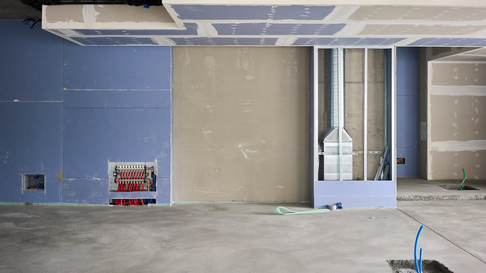
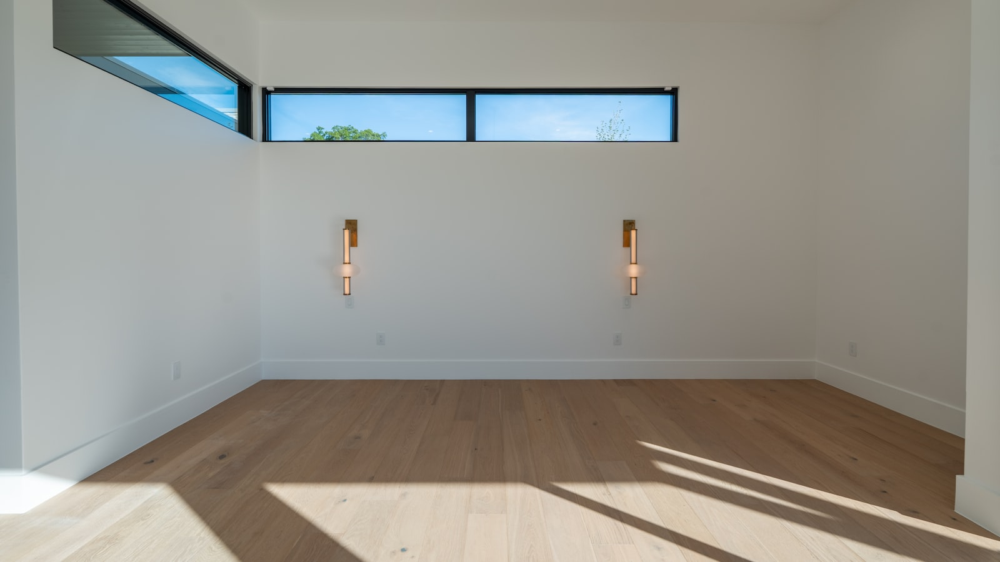
Regler mit Maus, Finger oder Pfeiltasten bewegen — links Vorher, rechts Nachher.
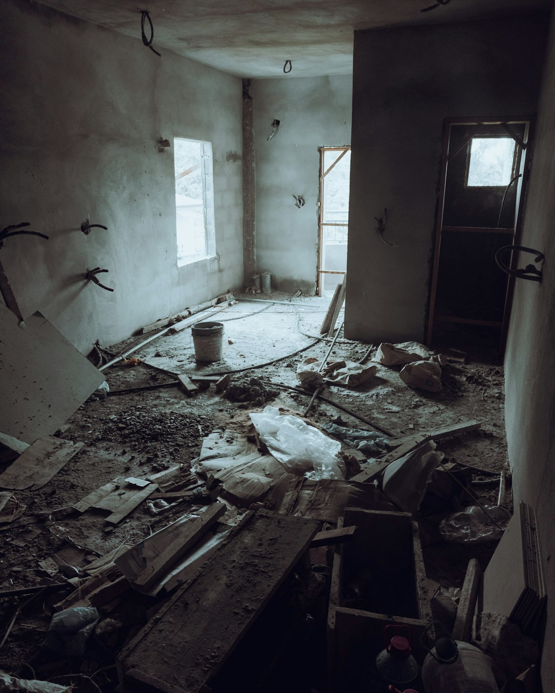
Vorher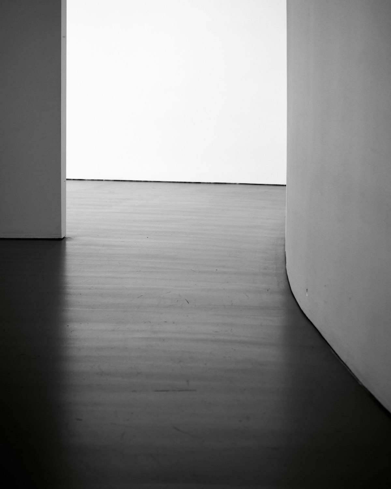
Nachher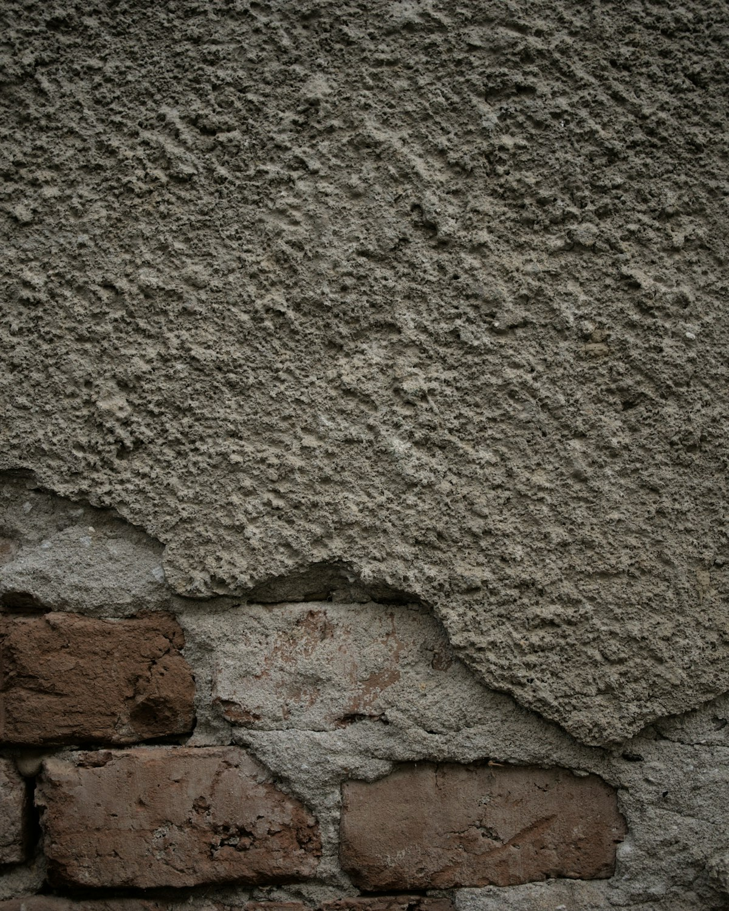
Vorher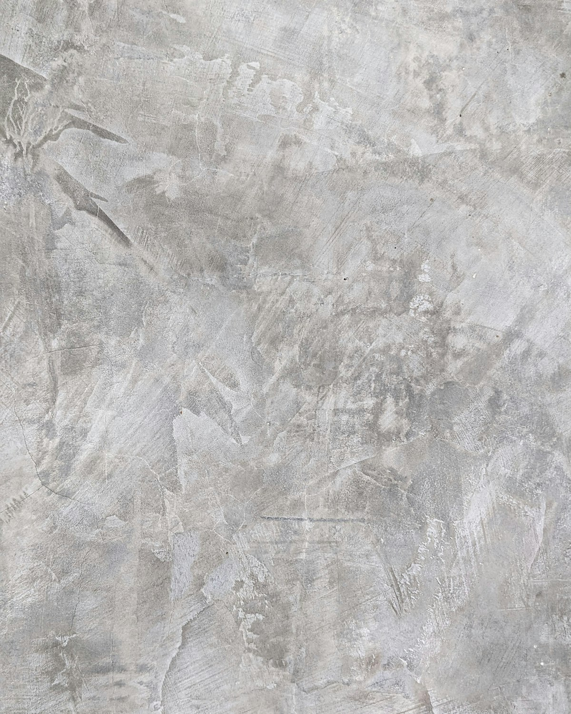
Nachher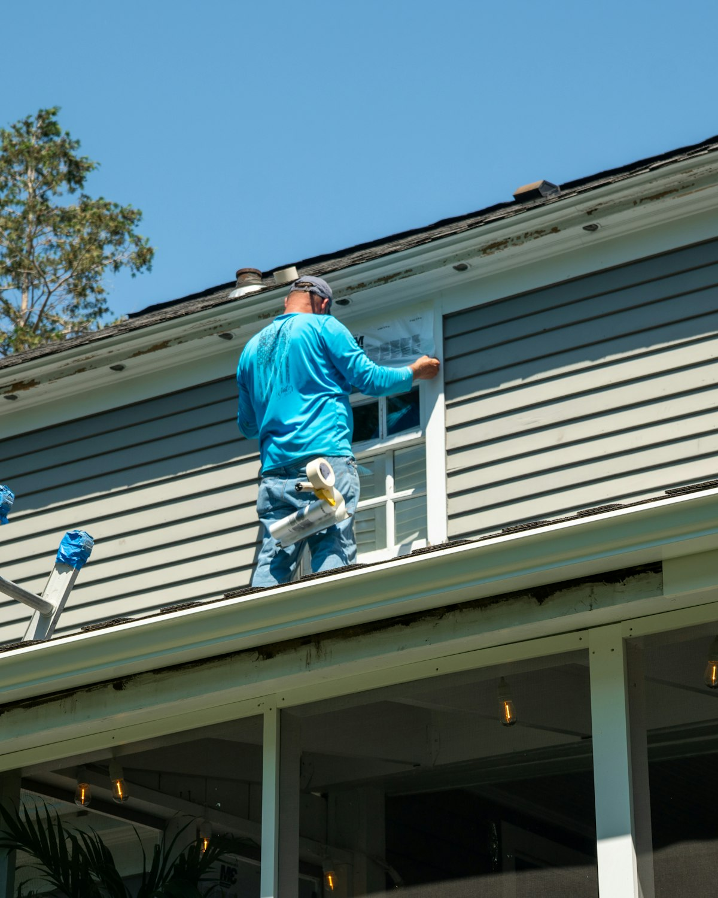
BeispielfotoMaler-, Tapezier-, Gipser- und Sanierungsarbeiten aus einer Hand: von Fassaden und Wärmedämmung über Trockenbau und Deckenabhängungen bis zu Schmucktechniken, die man heute nur noch selten bekommt.
Wir sehen uns Ihr Projekt vor Ort an — Zustand, Untergrund, Wünsche.
Sie erhalten ein klares Angebot mit Leistungen und Zeitrahmen.
Sauber abgeklebt, ordentlich gearbeitet, sorgfältig übergeben.
Beispiel-Ablauf der Konzeptvorschau — den tatsächlichen Ablauf stimmt der Betrieb mit Ihnen ab.